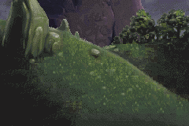
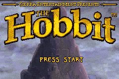

Hobbit, The - The Prelude to the Lord of the Rings (USA)
Stateless / Passcode
Cartridge Identity
- Game Code
AH9E(FamilyAH9)- Header Title
HOBBIT US- Maker / Revision
7D/ rev0- ROM Size
- 8.0 MiB (8,388,608 B)
- Save Media
None / Unknown- SHA-256
b911978db02a94500eeb82dfce1d8ef13dd2bc69075b8bedf4daad18f1b2c9a2- Engine / SDK Group
comm-001(196 families)
Screenshots


Cartridge Storage Architecture: Stateless / Passcode
Zero non-volatile battery hardware: This cartridge PCB contains ROM only (no SRAM, Flash, or EEPROM chips). Progression is preserved via on-screen passcodes or session-only gameplay. No
.sav file is generated or required.
ROM Assets, Compression & Audio
- BIOS Compression
- LZ77 (
0x10): 0 streams · RLE (0x30): 4,590 streams - ROM Pointer Tables
- 780 tables (637 pointing to validated compressed streams)
- SDK Backup Tags
EEPROM_V122
Hardware MMIO Subsystems
ppu_display0x8001140,0x80012a0,0x8001cb0,0x8001f98,0x80021b0,0x800369c